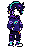
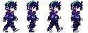
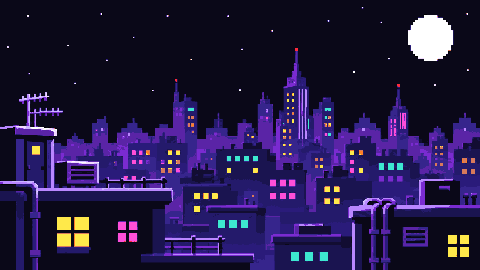
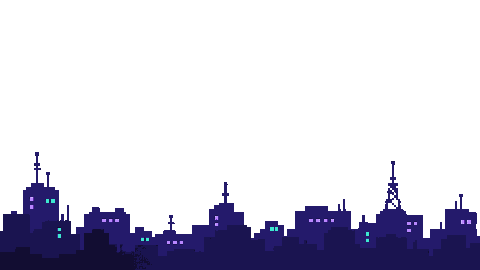
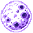
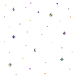
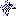

ritanol pixel assets
All assets shown at exactly 4× with nearest-neighbor browser scaling.
hero-idle.png — 32×48
hero-walk.png — 128×48, animated in four 32×48 frames

hero-portrait.png — 48×48
hero-portrait-smile.png — 48×48
icon-soul-jump.png — 32×32
icon-super-fun-game.png — 32×32
icon-harness.png — 32×32
save-point.png — 96×32, three frames
bg-city-night.png — 480×270
bg-city-far.png — 480×270
moon.png — 48×48
tile-dark-world.png — 32×32 seamless tile
tile-stars.png — 128×128 seamless tile
ornament-corner.png — 16×16
favicon.png — 32×32
shoot-star.png — 32×8